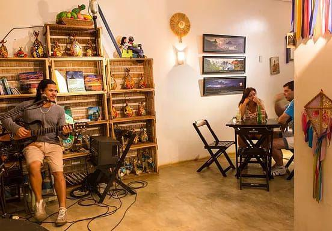
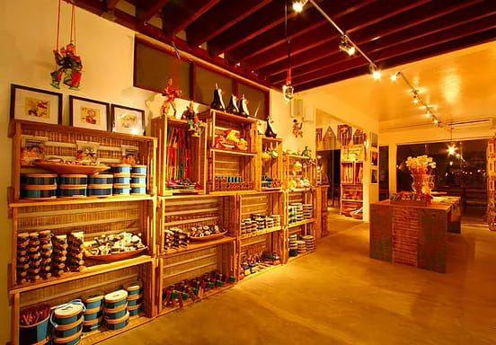
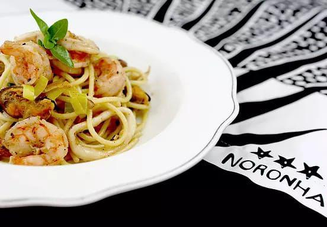

RESTAURANTE POUSADA ZÉ MARIA
Situado dentro da Pousada Zé Maria, o restaurante é aberto ao público. Considerado uma das melhores Pousadas de Noronha, Zé Maria oferece todas as Quartas e Sábados o Festival Gastronômico, conhecido pela experiência social de conhecer pessoas e apreciar uma comida excelente. Os pratos são apresentados pelo proprietário, Zé Maria, com grande empolgação e felicidade. As reservas devem ser feitas antecipadamente. Em outros dias o restaurante funciona com sistema A la carte.
BEIJUPIRÁ
Localizados dentro da Pousada Beijupirá Lodge, o restaurante é conhecido por seu ambiente íntimo e decoração romântica. As especialidades são frutos do mar e seus drinks são deliciosos. Recomenda-se reserva antecipada.
O PICO
Um Espaço de arte, diversão e gastronomia com um ambiente descolado e drinks excelentes. Esse é O Pico Noronha. Com um clima descontraído, O Pico é o lugar quando se pensa em fazer umas compras, beber algo refrescante e comer bem. Com um menu variado, O Pico agrada a todos os gostos. Junto ao restaurante você encontrará a nossa boutique com peças incríveis, artesanato local Nordestino e brasileiro e souvenires para levar uma bela recordação de Noronha. Nos finais de semana também há musica ao vivo e muita diversão!
  EMPÓRIO SÃO MIGUEL
Restaurante localizado na Vila dos Remédios, uma ótima opção para alimentação com baixo custo e qualidade. Com um sistema de self-service o restaurante oferece opções de saladas, arroz, feijão e outros pratos para uma refeição completa.
BAR DO CACHORRO
Localizado no topo da Praia do Cachorro, o restaurante oferece ótimas opções de refeição com uma bela vista. No por do sol é uma ótima opção para tomar um drink e ouvir uma música enquanto aprecia o visual.
PRAÇA FLAMBOYANT
Restaurante localizado na Praça que dá nome ao estabelecimento, oferece serviço de self-service em buffet com uma bela variedade de pratos e sobremesas. Uma outra excelente opção de almoço de baixo custo e qualidade